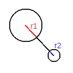

Bien que vous pouvez faire ce que vous voulez, voici quelques idées si vous êtes à court. D'autres idées sont disponibles sur programarcadegames. Section 13 - Paragraphe "Game Class"
N'importe quel projet vous apprendra beaucoup de mise en pratique des 4 éléments de base de la théorie (=, if, while, list). Quand votre projet grandira, ce sera nécessaire de lire le chapitre 3 de la théorie fonctions et objets.
Si vous êtes à l'aise et motivé, il est même possible d'apprendre plus, comme écrire dans les fichiers/bases de données. Faire du réseau (en LAN d'abord), ou même faire de la 3D.
Serveuse est un jeu où vous devez gérer une serveuse de restaurant.
Des clients arrivent dans votre restaurant à une table,
vous marchez jusqu'à leur table et prenez leur commande.
Ensuite vous retournez en cuisine pour leur faire parvenir la commande.
Vous attendez que les plats soient prêts puis les servez aux clients,
Les clients mangent et quand ils partent en payant l'addition vous devez ramenez leur vaisselle en cuisine.
Je propose de faire cela dans cet ordre
Deux carrés la table, la cuisine
Un cercle la serveuse. Celle-ci peut se déplacer de l'un à l'autre avec le clic de la souris.
Toutes les 60 secondes (3600 ticks à 60fps donc), un client arrive et s'installe à la table. Si il y a déjà un client quand un nouveau arrive, vous perdez une vie ou la partie.
Le client a une envie de plat le 1, le 2, le 3 ... et pourquoi pas le 0 ? Une couleur peut être assignée à chaque plat.
Quand on clique sur le client assis et que la serveuse est à la table, la serveuse se souvient de la commande. Sa couleur change pour voir le plat qui est dans sa mémoire.
Quand on clique sur la cuisine et que la serveuse y est, elle demande à la cuisine le plat qu'elle a dans sa tête.
On attend un certain nombre de tick (cela peut dépendre du plat). Et finalement le plat est disponible à la cuisine.
Quand on clique sur la cuisine et qu'un plat est prêt, la serveuse le prend, une autre couleur montre le plat sur son plateau
Quand on clique sur une table occupée, le plat est donné au client, si c'est le mauvais plat, vous perdez une vie ou la partie.
Le client mange et finalement s'en va. Un autre client peut arriver.
Améliorations
Plusieurs tables, plusieurs clients. LISTE.
Un plateau plus grand, pour pouvoir prendre plusieurs plats
Des boissons
Des clients demandant plusieurs plats et ou boisson
Plusieurs cuisines
Une difficulté le nombre de client augmente linéairement avec le temps. Ou du hasard dans les arrivées.
Des récompenses si les clients sont servis rapidement
Multijoueur
Plusieurs serveuse pour jouer avec vos amis. Essayez de faire des contrôles au clavier pour le deuxième joueur
Ici le but sera de faire une version offline de agar.io
Je propose de faire cela dans cet ordre
Un cercle (ou un carré) se déplace horizontalements comme ceci: si la souris est à gauche, va à gauche, sinon si la souris est à droite, va à droite, sinon ne bouge pas.
Faire indépendamment le déplacement vertical, cela donne donc 9 déplacements possibles (gauche, droite, haut, bas) et (bas-gauche, bas-droite, haut-droite, haut-gauche) et fixe.
(Optionnel) Faire toutes les directions en utilisant des maths. (voir note en bas)
Le agario, peut manger une petite cellule et ainsi devenir plus grand et plus lent. (collisions).
Quand le agario mange la cellule, elle réapparaît aléatoirement autre part.
Note sur le déplacement dans toutes les directions
Dans le vrai agario, on a plus de 9 déplacements possibles...
Les 9 déplacements précédents (gauche, droite, haut, bas), (bas-gauche, bas-droite, haut-gauche, haut-droite) et fixe
peuvent se noter (-1, 0), (1, 0), (0, -1), (0, 1), (-1, 1), (1, 1), (-1, -1), (1, -1), (0, 0).
Le déplacement est donc caractérisé par un déplacement en X (dx) et un déplacement en Y (dy).
Cette notation est dite vectorielle un déplacement est un vecteur.
dx,dy sont les composantes de ce vecteur.
Il peut être représenté par une flèche.
Avec des opérations vectorielles ou la trigonométrie (voir math.html), vous pouvez calculer dx et dy et avoir toutes les directions possibles.
Améliorations
Plusieurs cellules de nouriture. LISTE.
Possibilité de feed. Pour le mouvement dans un premier temps tu peux le faire à vitesse constante sur une certaine distance, ensuite il serait plus intéressant de faire un frottement linéaire
Possibilité de split.
Multijoueur
Plusieurs agario pour jouer avec vos amis. Essayez de faire des contrôles au clavier pour le deuxième joueur
Pour détecter une collision rectangle-rectangle, il faut comparer la collision en X et en Y. Il y a collision si il y a collision en X ET en Y.
Par exemple en X, on a 3 cas trop à gauche, trop à droite, et dans le dernier cas ça touche.
if le premier rectangle est trop à gauche du deuxième:
ne touche pas
else:
if le premier rectangle est trop à droite du deuxième:
ne touche pas
else:
touche
Trop à gauche
Trop à droite
Collision
Donc en 2D, on continuera notre cascade de if/else : en nous demandant si il est trop haut, trop bas... Ce qui nous fait 4 conditions à tester.
Pour la 3D, on continuera notre cascade avec trop loin, trop proche. Nous menant à 6 conditions.
Pour avoir une collision point-rectangle, on peut voir le point comme un rectangle de taille 0.
Cercle Cercle – Point Cercle
Pour une collision cercle-cercle il y a collision si la distance entre les deux cercles est plus petite que la somme des rayons. Pour calculer la distance entre deux points, utilisez Pythagore.
distance = pythagore(centre1, centre2)
if distance < rayon1 + rayon2:
touche
else:
ne touche pas
 Deux cercles qui ne se touchent pas
Remarquez que vu que la condition distance < rayon1 + rayon2 est la même que distance² < (rayon1 + rayon2)², le calcul peut se faire sans racine carrée
dx = centre1x - centre2x
dy = centre1y - centre2y
if dx * dx + dy * dy < (rayon1 + rayon2) * (rayon1 + rayon2):
touche
else:
ne touche pas
Pour avoir une collision point-cercle, on peut voir le point comme un cercle de rayon 0
{kind=link}
{kind=link}